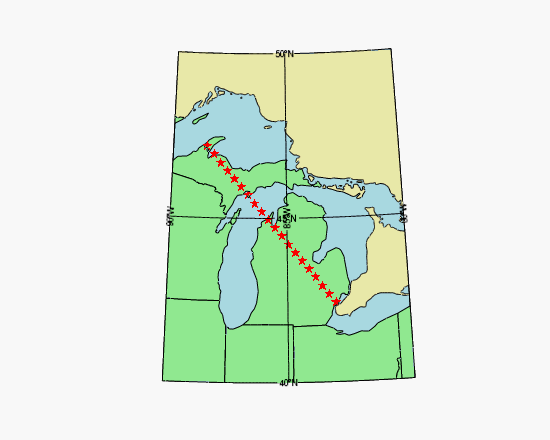
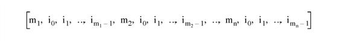

The MapForward method transforms map coordinates from longitude and latitude to Cartesian (x, y) coordinates, using the map projection associated with the graphic. 
; Set up map projection, draw a grid
mymap = MAP('Hotine Oblique Mercator', $
ELLIPSOID='GRS1980', $
MERCATOR_SCALE=0.9996d, $
LIMIT=[40, -90, 50, -80], $
CENTER_LATITUDE=45.3091667d, $
HOM_AZIM_LONGITUDE=-86, $
HOM_AZIM_ANGLE=337.25556d, $
FALSE_EASTING=2546731.496d, $
FALSE_NORTHING=-4354009.816d, $
FILL_COLOR="light_blue")
; Insert some shapes.
m1 = MAPCONTINENTS(/USA, $
FILL_COLOR="light green", COMBINE=0)
m2 = MAPCONTINENTS(/CANADA, $
FILL_COLOR="pale goldenrod")
; Convert from longitude/latitude to meters
longitudes = [-83.02, -88.50]
latitudes = [42.42, 47.17]
xy = mymap.MapForward(longitudes, latitudes)
; Convert back to longitude/latitude and plot
EXPAND, xy, 2, 20, xycoordinates
lonlat = mymap.MapInverse(xycoordinates)
p = PLOT(lonlat[0,*], lonlat[1,*], 'rS', $
/OVERPLOT, /SYM_FILLED)
Result = graphic .MapForward( Longitude [, Latitude ] [, CONNECTIVITY= vector ] [, /FILL] [, POLYGONS= variable ] [, POLYLINES= variable ] [, /RADIANS] )
The result is a (2, n ) array containing the Cartesian (x, y) coordinates.
Note: If the POLYGONS or POLYLINES keyword is present, the number of points in the result may be different than the number of input points, depending upon whether clipping and splitting occurs.
An n -element vector containing the longitude values. If the Latitude argument is omitted, Longitude must be a (2, n ) array of longitude and latitude pairs.
An n -element vector containing latitude values. If this argument is omitted, Longitude must be a (2, n ) array of longitude and latitude pairs.
Set this keyword to a vector containing an input connectivity list for polygons or polylines. The CONNECTIVITY keyword allows you to specify multiple polygons or polylines using a single array.
The CONNECTIVITY list is a one-dimensional integer array of the form:

where each m j is an integer specifying the number of vertices that define the polyline or polygon (the vertex count ), and each associated set of i 0 ... i m -1 are indices into the arrays of vertices specified by the Longitude and Latitude arguments.
For example, to draw polylines between the first, third, and sixth longitude and latitude values and the fourth, sixth, ninth, and tenth longitude and latitude values, set the CONNECTIVITY array equal to [3,0,2,5,4,3,5,8,9] .
To ignore a set of entries in the CONNECTIVITY array, set the vertex count, m j , equal to zero. (Note that if you set an m equal to zero, you must remove the associated set of i 0 ... i m -1 values as well.) To ignore the remaining entries in the CONNECTIVITY array, set the vertex count, m j , equal to -1.
This keyword is ignored if neither POLYGONS nor POLYLINES is present.
Set this keyword, along with the POLYGONS keyword, to perform a tessellation on the returned polygons after any clipping or splitting has been completed. This keyword is ignored if POLYGONS is not set.
Tip: The use of the FILL keyword avoids having to first pass your data through MapForward, and then again through the IDLgrTessellator object. Since IDLgrPolygon can only draw convex polygons correctly, you should use the FILL keyword when your input polygon is either complex (that is, if the polygon crosses itself) or concave. Tessellation is also useful if your data contains one polygon within another, such as an island within a lake within a country. In this case the CONNECTIVITY array could be used to pass all three polygons in to MapForward, and the FILL keyword would automatically perform the correct tessellation.
Set this keyword to a named variable that will contain a connectivity array of the form described above in the CONNECTIVITY keyword.
If this keyword is present, the arrays specified by the Longitude and Latitude arguments are assumed to be the vertices of a closed polygon. In this case, polygon clipping and splitting is performed in addition to the map transform, and the connectivity array is returned in the specified variable.
If this keyword is not present, the arrays specified by the Longitude and Latitude arguments are assumed to be independent points and no clipping or splitting is performed.
Set this keyword to a named variable that will contain a connectivity array of the form described above in the CONNECTIVITY keyword.
If this keyword is present, the arrays specified by the Longitude and Latitude arguments are assumed to be the vertices of a polyline. In this case, polyline clipping and splitting is performed in addition to the map transform, and the connectivity array is returned in the specified variable.
If this keyword is not present, the arrays specified by the Longitude and Latitude arguments are assumed to be independent points and no clipping or splitting is performed.
Set this keyword to indicate that the input longitude and latitude coordinates are in radians. By default, coordinates are assumed to be in degrees.
|
8.1 |
Introduced |